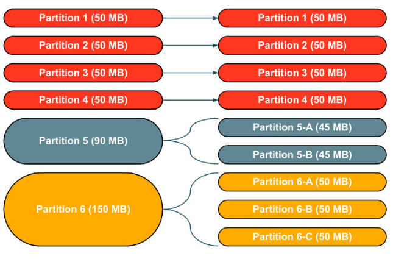

Section 6 · Troubleshooting, Monitoring and Optimization · Quelle: Kurs 7, Kapitel 3.1–3.3
Drei der häufigsten Ursachen für langsame oder sogar abstürzende Spark-Jobs sind Data Skew (ungleich verteilte Daten), Shuffle (Datenumverteilung über das Netzwerk) und Spill (Auslagern von Arbeitsspeicher auf die Festplatte). Alle drei Phänomene hängen eng zusammen: Skew verstärkt Shuffle-Probleme, und beide können zu Spill führen. Dieses Kapitel erklärt, wie die drei Effekte entstehen, wie man sie im Spark UI erkennt und mit welchen Maßnahmen man ihnen begegnet.
Beim initialen Einlesen werden Daten typischerweise in 128 MB große Partitionen aufgeteilt und gleichmäßig verteilt. Sobald jedoch transformiert wird – etwa durch eine Aggregation nach einer Schlüsselspalte – kann eine Partition erheblich mehr Datensätze enthalten als eine andere. Ein einfaches Beispiel: Werden Transaktionsdaten nach Stadt aggregiert und eine Stadt hat doppelt so viele Einwohner wie die übrigen, landet in ihrer Partition auch doppelt so viel Datenvolumen. Ein geringer Grad an Skew ist meist unproblematisch, starker Skew führt jedoch zu Spill oder sogar zu schwer diagnostizierbaren Out-of-Memory-Fehlern.
Die Konsequenz von Skew: Da eine Stage erst abgeschlossen ist, wenn die langsamste Task fertig ist, bestimmt die am stärksten überladene Partition die Gesamtlaufzeit der gesamten Stage – und unter Umständen reicht der verfügbare Arbeitsspeicher für diese eine Partition nicht mehr aus.

NULL-)Wert zurückzuführen, etwa bei einem Join über eine Spalte mit vielen Nullwerten, löst ein einfacher Filter das Problem oft vollständig.Ein Shuffle tritt immer dann auf, wenn Daten am Ende einer Stage neu über das Netzwerk verteilt werden müssen, damit die nächste Stage darauf aufbauen kann – klassischerweise bei Operationen wie join(), distinct(), groupBy(), orderBy() oder bestimmten Aktionen wie count(). Solche Operationen werden als Wide Transformations bezeichnet, weil sie zwei Stages benötigen: In der ersten Stage (Map) wird vorbereitet, welche Daten wohin verschoben werden müssen; anschließend erfolgt der eigentliche Shuffle über das Netzwerk; in der zweiten Stage (Reduce) werden die neu angeordneten Daten weiterverarbeitet. Operationen ohne Shuffle heißen entsprechend Narrow Transformations und benötigen nur eine einzige Stage.
Welche konkrete Join-Strategie Spark wählt, hat großen Einfluss auf die Menge an Shuffle-Daten:
Spill beschreibt, was passiert, wenn eine Datenmenge nicht mehr vollständig in den verfügbaren Arbeitsspeicher (RAM) passt: Ein Teil der Daten wird auf die Festplatte ausgelagert und bei Bedarf später wieder zurückgelesen. Da Festplattenzugriffe deutlich langsamer sind als Arbeitsspeicherzugriffe, verlangsamt Spill die Verarbeitung erheblich – findet dieser Auslagerungsprozess gar nicht erst statt und reicht der Speicher trotzdem nicht aus, kommt es zu einem Out-of-Memory-Fehler, der den gesamten Job zum Absturz bringt.
spark.sql.files.maxPartitionBytes zu hoch eingestellt (Standardwert: 128 MB) – führt zu überdimensionierten Partitionen.explode() selbst kleiner Arrays, wodurch deutlich mehr Zeilen entstehen als vorher vorhanden waren.join() oder crossJoin() zweier Tabellen, die eine große Zahl neuer Zeilen erzeugen – insbesondere bei Cross-Joins oder Joins auf Skew-Schlüsseln.groupBy() auf Spalten mit niedriger Kardinalität, countDistinct() oder collect_set().spark.sql.shuffle.partitions zu niedrig gesetzt oder falsche Verwendung von repartition().Spill wird ausschließlich auf der Detailseite einer einzelnen Stage angezeigt (in den zusammengefassten Metriken, den nach Executor aggregierten Metriken oder in der Tasks-Tabelle) bzw. in den entsprechenden Query-Details. Das macht Spill leicht zu übersehen – die Spalten für „Spill (Memory)“ und „Spill (Disk)“ erscheinen im UI überhaupt nur, wenn tatsächlich Spill vorliegt. Sind diese Spalten sichtbar, ist das bereits ein eindeutiges Warnsignal. Der Wert „Spill (Disk)“ ist dabei stets kleiner als „Spill (Memory)“, da die Daten beim Schreiben auf die Festplatte automatisch komprimiert werden.
explode() möglichst vermeiden.